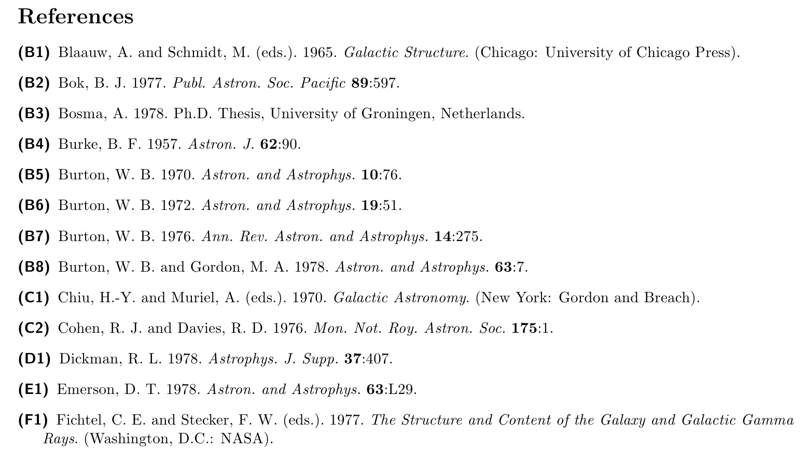

Examples¶
Example 1¶
The following example is taken from a question posted at http://tex.stackexchange.com/questions/147675/bibtex-scientific-style-with-pages-at-the-end, where the desired bibliography format is given as:

With Bibulous, we can easily provide templates that provide the formatting that the OP asks for:
TEMPLATES:
article = \textit{<au>} <title> // <journal> -- <year>. -- Vol.~<volume>. P.~[<startpage> -- <endpage>|<startpage>|<eid>|].
book = \textit{<au>} <title>. [Ch.~<chapter>. ]-- <address>: <publisher>, <year>.[ -- <startpage>~p.]
inbook = \textit{<au>} <title> // <booktitle>[ / Ed. by <ed.if_singular(editorlist, nothing, etal_message)>]. -- <address>: ...
<publisher>, <year>.[ -- P.~<startpage> -- <endpage>| -- P.~<startpage>| -- P.~<eid>|].
inproceedings = \textit{<au>} <title> // <booktitle>[ / Ed. by <ed.if_singular(editorlist, nothing, etal_message)>]. -- ...
<publisher>, <address>, <year>. -- P.~[<startpage> -- <endpage>|<startpage>|<eid>|].
SPECIAL-TEMPLATES:
authorlist = <author.to_namelist()>
editorlist = <editor.to_namelist()>
authorname.n = [<authorlist.n.prefix> ]<authorlist.n.last>[ <authorlist.n.first.initial()>.][ <authorlist.n.middle.initial()>.][, <authorlist.n.suffix>.]
au = <authorname.0>, ..., <authorname.9>
ed = [<editorlist.0.first.initial()>. ][ <editorlist.0.middle.initial()>. ][<editorlist.0.prefix> ]<editorlist.0.last>[, <editorlist.0.suffix>.]
OPTIONS:
nothing = {}
so that if we use this template together with the following database file:
@article{Holzwarth,
author = {G. Holzwarth and G. Eckart},
title = {Fluid-dynamical approximation for finite Fermi systems},
journal = {Nucl. Phys.},
year = 1979,
volume = {A325},
pages = {1-30}
}
@book{Bertsch,
author = {G. F. Bertsch and R. A. Broglia},
title = {Oscillations in finite quantum systems},
chapter = 6,
address = {Cambridge},
publisher = {Cambridge University},
year = 1994,
pages = 150
}
@inbook{Woude,
author = {A. {Van der Woude}},
title = {The electric giant resonances},
booktitle = {Electric and magnetic giant resonances in nuclei},
editor = {J. Speth},
address = {Singapore},
publisher = {World Scientific P.C.},
year = 1991,
pages = {99-232}
}
@inproceedings{Smolanzuk,
author = {R. Smolanzuk and J. Skalski and A. Sobiczewski},
title = {Masses and half-life of superheavy elements},
booktitle = {Proc.\ of the International Workshop 24 on Gross Properties of Nuclei and Nuclear Excitations},
editor = {H. Feldmeier and others},
address = {Darmstadt},
publisher = {GSI},
year = 1996,
pages = {35-42}
}
then we get the formatted result shown below

Example 2¶
The next example is taken from the bibliography style found in: Dimitri Mihalas and James Binney, _Galactic Astronomy: Structure and Kinematics_, 2nd ed. (W. H. Freeman, New York, 1981). A snapshot from the the book’s bibliography looks like

To produce this style, we can define the following templates:
TEMPLATES:
article = <au> <year>. \textit{<journal>} \textbf{<volume>}:<pages>.
book = [<au>|<ed.if_singular(editorlist, eds_msg1, eds_msg2)>|]. <year>. \textit{<title>}. (<address>: <publisher>).
proceedings = book
phdthesis = <au> <year>. Ph.D. Thesis, <university>.
SPECIAL-TEMPLATES:
authorlist = <author.to_namelist()>
editorlist = <editor.to_namelist()>
authorname.n = [<authorlist.n.prefix> ]<authorlist.n.last>[, <authorlist.n.first.initial()>.][ <authorlist.n.middle.initial()>.][, <authorlist.n.suffix>.]
au = <authorname.0>, ...,{ and }<authorname.9>
editorname.n = [<editorlist.n.prefix> ]<editorlist.n.last>[, <editorlist.n.first.initial()>.][ <editorlist.n.middle.initial()>.][, <editorlist.n.suffix>.]
ed = <editorname.0>, ...,{ and }<editorname.5>
authorlabel = [<authorlist.0.prefix>|<authorlist.0.last>]
editorlabel = [<editorlist.0.prefix>|<editorlist.0.last>]
sortkey = [<authorlabel><year.zfill(4)>|<editorlabel><year>]
citelabel = (<citealnum>)
OPTIONS:
eds_msg1 = { }(ed.)
eds_msg2 = { }(eds.)
use_citeextract = True
so that with the following database file:
@book{Blaauw1965,
editor = {A. Blaauw and M. Schmidt},
title = {Galactic Structure},
address = {Chicago},
publisher = {University of Chicago Press},
year = 1965
}
@article{Bok1977,
author = {B. J. Bok},
journal = {Publ. Astron. Soc. Pacific},
year = 1977,
volume = 89,
pages = 597
}
@phdthesis{Bosma1978,
author = {A. Bosma},
university = {University of Groningen, Netherlands},
year = 1978
}
@article{Burke1957,
author = {B. F. Burke},
journal = {Astron. J.},
year = 1957,
volume = 62,
pages = 90
}
@article{Burton1970,
author = {W. B. Burton},
journal = {Astron. and Astrophys.},
year = 1970,
volume = 10,
pages = 76
}
@article{Burton1972,
author = {W. B. Burton},
journal = {Astron. and Astrophys.},
year = 1972,
volume = 19,
pages = 51
}
@article{Burton1976,
author = {W. B. Burton},
journal = {Ann. Rev. Astron. and Astrophys.},
year = 1976,
volume = 14,
pages = 275
}
@article{Burton1978,
author = {W. B. Burton and M. A. Gordon},
journal = {Astron. and Astrophys.},
year = 1978,
volume = 63,
pages = 7
}
@book{Chiu1970,
editor = {H.-Y. Chiu and A. Muriel},
title = {Galactic Astronomy},
year = 1970,
address = {New York},
publisher = {Gordon and Breach}
}
@article{Cohen1976,
author = {R. J. Cohen and R. D. Davies},
journal = {Mon. Not. Roy. Astron. Soc.},
year = 1976,
volume = 175,
pages = 1
}
@article{Dickman1978,
author = {R. L. Dickman},
journal = {Astrophys. J. Supp.},
year = 1978,
volume = 37,
pages = 407
}
@article{Emerson1978,
author = {D. T. Emerson},
journal = {Astron. and Astrophys.},
year = 1978,
volume = 63,
pages = {L29},
}
@proceedings{Fichtel1977,
editor = {C. E. Fichtel and F. W. Stecker},
title = {The Structure and Content of the Galaxy and Galactic Gamma Rays},
address = {Washington, D.C.},
publisher = {NASA},
year = 1977
}
we get the following formatted result
{kind=link}
Example 3¶
The next example illustrates the style used by the Optical Society of America (OSA) for their journals. The following formatted bibliography

is obtained using the template
TEMPLATES:
article = <au>, \enquote{[\href{<url>}{<title>}|\href{<doi>}{<title>}|<title>],} <journal> \textbf{<volume>},{ }...
[<startpage>--<endpage>|<startpage>|<eid>|] (<year>).[ <note>]
book = [<au>|<ed>|<organization>|<institution>|], \textit{<title>}[, <edition.ordinal()>~ed.][, vol.~<volume>]{ }...
(<publisher>, <year>)[ Chap.~<chapter>][, pp.~<startpage>--<endpage>|, p.~<startpage>].[ <note>]
endnote = <note>
inbook = incollection
incollection = <au>, \enquote{<title>,} in \textit{<booktitle>}, [vol.~<volume>, ][<edition.ordinal()>~ed., ]...
[<ed>, ][<series>, ][Chap.~<chapter>, ][pp.~<startpage>--<endpage>|p.~<startpage>|<eid>|] (<publisher>, <year>).[ <note>]
inproceedings = <au>, \enquote{<title>,} in \textit{<booktitle>}[, <ed>][, in <series>][ \textbf{<volume>}]...
[, pp.~<startpage>--<endpage>|, p.~<startpage>|, <eid>] (<year>).[ <note>]
manual = [<au>|<ed>|<organization>|<institution>|], \textit{<title>}[, vol.~<volume>]...
[, <edition.ordinal()>~ed.|, ver.~<version>][, <ed>] (<organization>, <year>)[, Chap.~<chapter>]...
[, pp.~<startpage>--<endpage>|, p.~<startpage>].[ <note>]
mastersthesis = <au>, \enquote{<title>,} M.S. dissertation (<school>, <year>).[ <note>]
misc = [<au>, ][\enquote{<title>}][ (<organization>, <year>)| (<year>)].[ <note>][ (url: \url{<url>})]
patent = <au>, \enquote{<title>,} <nationality> patent <number> (<year>).[ <note>]
phdthesis = <au>, \enquote{<title>,} Ph.D. dissertation (<school>, <year>).[ <note>]
poster = <au>, \enquote{<title>}, poster [presented at <conference>]([<month> ]<year>).[ <note>]
presentation = <au>, \enquote{<title>}, presentation [presented at <conference>]([<month> ]<year>).[ <note>]
proceedings = <ed>, \textit{<title>}, [vol.~<volume>][, <edition.ordinal()>~ed.] (<year>).[ <note>]
techreport = [<au>|<ed>|<organization>|<institution>|], \enquote{<title>,} <institution>, Tech. Rep. <number> (<year>).[ <note>]
website = \href{[<url>|<doi>]}{[<url>|<doi>]}
SPECIAL-TEMPLATES:
sortkey = <citenum.zfill(2)> ## order the reference list in the same order as the citations were given in
citelabel = <citenum>. ## use numeric reference labels
OPTIONS:
maxauthors = 25 ## if more than 25 authors, then use "et al." format (only applied when using the default "<au>" variable)
minauthors = 9 ## if "maxauthors" is exceeded, then display only the first "minauthors" and et al. (only applied when using the default "<au>" variable)
maxeditors = 5 ## if more than 5 editors, then use "et al." format (only applied when using the default "<ed>" variable)
mineditors = 5 ## if "maxeditors" is exceeded, then display only the first "mineditors" and et al. (only applied when using the default "<ed>" variable)
procspie_as_journal = True ## treat SPIE conference proceedings like a journal, with journal name 'Proc. SPIE'
sort_case = False ## whether to use case-sensitive citation sorting (default is False)
use_abbrevs = True ## whether to use the abbreviation strings (mainly useful for debugging)
french_initials = False ## whether to use French initials (i.e. Jean-Paul -> J.-P. and not J., also Philippe -> Ph. not P.)
bibitemsep = 0pt ## the extra vertical separation between each bibliography entry. Defining this option *overrides* LaTeX's existing definition for \bibitemsep.
etal_message = , \textit{et~al.} ## what text to place at the end of an authorlist when there are too many
edmsg1 = , ed. ## the label to use after the editor namelist when only one editor is present
edmsg2 = , eds ## the label to use after the editor namelist when multiple editors are present
## The remaining exceptions below are really for users rather than for the journal. Maybe put these someplace else?
undefstr = ??? ## what string to replace undefined required fields with
replace_newlines = True ## whether to replace newline characters inside fields with spaces
allow_scripts = False ## whether to allow user scripts in BST files
case_sensitive_field_names = False ## whether to allow field names to be case sensitive (i.e. so that "BOOK" will not be the same entrytype as "book")
use_citeextract = True ## whether to automatically perform citation extraction each time Bibulous is run
name_separator = and ## the string used to separate names in a BibTeX-format field of names
VARIABLES:
DEFINITIONS:
and the database file
@String{ol = {Opt. Lett.}}
@String{procspie = {Proc. SPIE}}
@Article{Tkaczyk2012,
title = {Vectorial laws of refraction and reflection using the cross product and dot product},
author = {Eric R. Tkaczyk},
journal = ol,
volume = {37},
year = {2012},
pages = {972--974},
doi = {http://dx.doi.org/10.1364/OL.37.000972}
}
@Book{Smith-1992,
title = {Modern Lens Design: A Resource Manual},
year = {1992},
address = {New York},
author = {Warren J. Smith},
publisher = {McGraw-Hill}
}
@Inbook{Silverman1998,
title = {Optical detection theory},
author = {Mark Silverman},
pages = {139--159},
publisher = {Princeton University Press},
year = {1998},
booktitle = {Probing the Atom: Interactions of Coupled States, Fast Beams, and Loose Electrons},
chapter = {6}
}
@Incollection{Feynman1987,
title = {Negative probability},
author = {Richard P. Feynman},
booktitle = {Quantum Implications --- Essays in Honour of {D}avid Bohm},
publisher = {Routledge \& Kegan Paul},
year = {1987},
pages = {235--248},
editor = {B. J. Hiley and F. D. Peat}
}
@Inproceedings{Descour1995a,
title = {Nonscanning no-moving-parts imaging spectrometer},
author = {Michael R. Descour and Eustace L. Dereniak},
booktitle = {Imaging Spectrometry},
year = {1995},
pages = {48--64},
series = procspie,
volume = {2480},
crossref = {ProcSPIE2480}
}
@Manual{CGAL2006,
title = {CGAL user and reference manual},
year = {2006},
month = {July},
organization = {CGAL Project}
}
@Mastersthesis{RimmerDiss,
title = {Optical aberration coefficients},
author = {Matthew Peter Rimmer},
school = {University of Rochester},
year = {1963}
}
@Misc{Knuth1992,
title = {Convolution polynomials},
author = {Donald E. Knuth},
year = {1992},
url = {http://arxiv.org/pdf/math/9207221.pdf}
}
@Patent{Bayer1976,
title = {Color imaging array},
author = {Bryce E. Bayer},
number = {3971065},
year = {1976},
yearfiled = {1975},
assignee = {Eastman Kodak Company},
nationality = {USA}
}
@Phdthesis{BroglieDiss,
title = {On the theory of quanta},
author = {Louis-Victor de Broglie},
school = {University of Paris},
year = {1925},
note = {A translation by A. F. Kracklauer of the original, Recherches sur la th{\'e}orie des quanta, (Ann. de Phys., 10th series, v. III, Jan-Feb 1925).}
}
@Poster{Jacquemart2012,
title = {The next HITRAN edition: description of new parameters and formats},
author = {David Jacquemart and Laurence S. Rothman},
address = {[location unknown]},
year = {2012}
}
@Presentation{Boyd2006,
title = {Convex optimization - class slides},
author = {Stephen Boyd and Lieven Vandenberghe},
year = {2006}
}
@Proceedings{ProcSPIE4480,
title = {Imaging Spectrometry VII},
year = {2002},
editor = {Michael R. Descour},
series = procspie,
volume = {4480}
}
@Techreport{Bohannon2009,
title = {Can people distinguish p{\^a}t{\'e} from dog food?},
author = {John Bohannon and Robin Goldstein and Alexis Herschkowitsch},
institution = {American Association of Wine Economists},
year = {2009},
number = {51757},
month = {April}
}
@Website{Zemax,
url = {www.zemax.com},
organization = {ZEMAX Development Corp.}
}
Example 4¶
The next example illustrates the style used by the society SPIE for their journals. The following formatted bibliography

is obtained using the template
TEMPLATES:
article = <au>, \enquote{<title>,} [\href{<url>}{\textit{<journal>}}|\href{<doi>}{\textit{<journal>}}|\textit{<journal>}]{ }...
\textbf{<volume>}(<number>), [<startpage>--<endpage>|<startpage>|<eid>|] (<year>).[ <note>]
book = [<au>|<ed>|<organization>|<institution>|], \textit{<title>}[, <edition.ordinal()>~ed.][, vol.~<volume>]{ }...
<publisher>, <address> (<year>)[ Chap.~<chapter>][, pp.~<startpage>--<endpage>|, p.~<startpage>].[ <note>]
endnote = Warning (entry <citekey>): Opt.\ Eng.\ does not allow endnotes.
inbook = incollection
incollection = <au>, \enquote{<title>,} in \textit{<booktitle>}, [vol.~<volume>, ][<edition.ordinal()>~ed., ]...
[<ed>, ][<series>, ][Chap.~<chapter>, ][pp.~<startpage>--<endpage>|p.~<startpage>|<eid>|] (<publisher>, <year>).[ <note>]
inproceedings = <au>, \enquote{<title>,} in \textit{<booktitle>}[, <ed>][, in <series>][ \textbf{<volume>}]...
[, pp.~<startpage>--<endpage>|, p.~<startpage>|, <eid>] (<year>).[ <note>]
manual = [<au>|<ed>|<organization>|<institution>|], \textit{<title>}[, vol.~<volume>]...
[, <edition.ordinal()>~ed.|, ver.~<version>][, <ed>] (<organization>, <year>)[, Chap.~<chapter>]...
[, pp.~<startpage>--<endpage>|, p.~<startpage>].[ <note>]
mastersthesis = <au>, \enquote{<title>,} M.S. dissertation (<school>, <year>).[ <note>]
misc = [<au>, ][\enquote{<title>}][ (<organization>, <year>)| (<year>)].[ <note>][ (url: \url{<url>})]
patent = <au>, \enquote{<title>,} <nationality> patent <number> (<year>).[ <note>]
phdthesis = <au>, \enquote{<title>,} Ph.D. dissertation (<school>, <year>).[ <note>]
poster = <au>, \enquote{<title>}, poster [presented at <conference>]([<month> ]<year>).[ <note>]
presentation = <au>, \enquote{<title>}, presentation [presented at <conference>]([<month> ]<year>).[ <note>]
proceedings = <ed>, \textit{<title>}, [vol.~<volume>][, <edition.ordinal()>~ed.] (<year>).[ <note>]
techreport = [<au>|<ed>|<organization>|<institution>|], \enquote{<title>,} <institution>, <number> (<year>).[ <note>]
website = \href{[<url>|<doi>]}{[<url>|<doi>]}
SPECIAL-TEMPLATES:
sortkey = <citenum.zfill(2)> ## order the reference list in the same order as the citations were given in
citelabel = <citenum> ## use numeric reference labels
OPTIONS:
maxauthors = 3 ## if more than 3 authors, then use "et al." format (only applied when using the default "<au>" variable)
minauthors = 1 ## if "maxauthors" is exceeded, then display only the first "minauthors" and et al. (only applied when using the default "<au>" variable)
maxeditors = 3 ## if more than 3 editors, then use "et al." format (only applied when using the default "<ed>" variable)
mineditors = 1 ## if "maxeditors" is exceeded, then display only the first "mineditors" and et al. (only applied when using the default "<ed>" variable)
procspie_as_journal = False ## treat SPIE conference proceedings like a journal, with journal name 'Proc. SPIE'
sort_case = False ## whether to use case-sensitive citation sorting (default is False)
use_abbrevs = True ## whether to use the abbreviation strings (mainly useful for debugging)
bibitemsep = 0pt ## the extra vertical separation between each bibliography entry. Defining this option *overrides* LaTeX's existing definition for \bibitemsep.
etal_message = , \textit{et~al.} ## what text to place at the end of an authorlist when there are too many
edmsg1 = , ed. ## the label to use after the editor namelist when only one editor is present
edmsg2 = , eds ## the label to use after the editor namelist when multiple editors are present
## The remaining exceptions below are really for users rather than for the journal. Maybe put these someplace else?
undefstr = ??? ## what string to replace undefined required fields with
replace_newlines = True ## whether to replace newline characters inside fields with spaces
allow_scripts = False ## whether to allow user scripts in BST files
case_sensitive_field_names = False ## whether to allow field names to be case sensitive (i.e. "BOOK" will not be the same entrytype as "book")
name_separator = and ## the string used to separate names in a BibTeX-format field of names
VARIABLES:
DEFINITIONS:
and the database file
@String{ol = {Opt. Lett.}}
@String{procspie = {Proc. SPIE}}
@Article{Tkaczyk2012,
title = {Vectorial laws of refraction and reflection using the cross product and dot product},
author = {Eric R. Tkaczyk},
journal = ol,
volume = {37},
number = {5},
year = {2012},
pages = {972--974},
doi = {http://dx.doi.org/10.1364/OL.37.000972}
}
@Book{Smith-1992,
title = {Modern Lens Design: A Resource Manual},
year = {1992},
address = {New York},
author = {Warren J. Smith},
publisher = {McGraw-Hill}
}
@Inbook{Silverman1998,
title = {Optical detection theory},
author = {Mark Silverman},
pages = {139--159},
publisher = {Princeton University Press},
year = {1998},
booktitle = {Probing the Atom: Interactions of Coupled States, Fast Beams, and Loose Electrons},
chapter = {6}
}
@Incollection{Feynman1987,
title = {Negative probability},
author = {Richard P. Feynman},
booktitle = {Quantum Implications --- Essays in Honour of {D}avid Bohm},
publisher = {Routledge \& Kegan Paul},
year = {1987},
pages = {235--248},
editor = {B. J. Hiley and F. D. Peat}
}
@Inproceedings{Descour1995a,
title = {Nonscanning no-moving-parts imaging spectrometer},
author = {Michael R. Descour and Eustace L. Dereniak},
booktitle = {Imaging Spectrometry},
year = {1995},
pages = {48--64},
series = procspie,
volume = {2480},
crossref = {ProcSPIE2480}
}
@Manual{CGAL2006,
title = {CGAL user and reference manual},
year = {2006},
month = {July},
organization = {CGAL Project}
}
@Mastersthesis{RimmerDiss,
title = {Optical aberration coefficients},
author = {Matthew Peter Rimmer},
school = {University of Rochester},
year = {1963}
}
@Misc{Knuth1992,
title = {Convolution polynomials},
author = {Donald E. Knuth},
year = {1992},
url = {http://arxiv.org/pdf/math/9207221.pdf}
}
@Patent{Bayer1976,
title = {Color imaging array},
author = {Bryce E. Bayer},
number = {3971065},
year = {1976},
yearfiled = {1975},
assignee = {Eastman Kodak Company},
nationality = {USA}
}
@Phdthesis{BroglieDiss,
title = {On the theory of quanta},
author = {Louis-Victor de Broglie},
school = {University of Paris},
year = {1925},
note = {A translation by A. F. Kracklauer of the original, Recherches sur la th{\'e}orie des quanta, (Ann. de Phys., 10th series, v. III, Jan-Feb 1925).}
}
@Poster{Jacquemart2012,
title = {The next HITRAN edition: description of new parameters and formats},
author = {David Jacquemart and Laurence S. Rothman},
address = {[location unknown]},
year = {2012}
}
@Presentation{Boyd2006,
title = {Convex optimization - class slides},
author = {Stephen Boyd and Lieven Vandenberghe},
year = {2006}
}
@Proceedings{ProcSPIE4480,
title = {Imaging Spectrometry VII},
year = {2002},
editor = {Michael R. Descour},
series = procspie,
volume = {4480}
}
@Techreport{Bohannon2009,
title = {Can people distinguish p{\^a}t{\'e} from dog food?},
author = {John Bohannon and Robin Goldstein and Alexis Herschkowitsch},
institution = {American Association of Wine Economists},
year = {2009},
number = {51757},
month = {April}
}
@Website{Zemax,
url = {www.zemax.com},
organization = {ZEMAX Development Corp.}
}
Example 5¶
The following example is taken from a question posted at http://tex.stackexchange.com/questions/160737/bold-labels-and-more-with-custom-bibtex-bst-and-author-year, where an answer to the original poster’s question is given as
{kind=link}
That is the reference list entries should have the author list in bold, journal articles should have their title quoted using German-style quotation marks, and editor lists should be given in small caps. The first answerer to the OP’s question gives an example database file
@BOOK{ko,
title = {Wissenschaftlich schreiben leicht gemacht},
publisher = {Haupt},
year = {2011},
author = {Kornmeier, M.},
number = {3154},
series = {UTB},
address = {Bern},
edition = {4},
subtitle = {für Bachelor, Master und Dissertation}
}
@BOOK{nial,
title = {Wissenschaftliche Arbeiten schreiben mit Word 2010},
publisher = {Addison Wesley},
year = {2011},
author = {Nicol, N. and Albrecht, R.},
address = {München},
edition = {7}
}
@ARTICLE{shome,
author = {Scholz, S. and Menzl, S.},
title = {Alle Wege führen nach Rom},
journal = {Medizin Produkte Journal},
year = {2011},
volume = {18},
pages = {243-254},
subtitle = {ein Vergleich der regulatorischen Anforderungen und Medizinprodukte
in Europa und den USA},
issue = {4}
}
@INBOOK{shu,
author = {Schulz, C.},
title = {Corporate Finance für den Mittelstand},
booktitle = {Praxishandbuch Firmenkundengeschäft},
year = {2010},
editor = {Hilse, J. and Netzel, W and Simmert, D.B.},
booksubtitle = {Geschäftsfelder Risikomanagement Marketing},
publisher = {Gabler},
pages = {97-107},
location = {Wiesbaden}
}
that makes use of separate formatting instructions for titles and subtitles, so that an appropriate style template is
TEMPLATES:
article = \textbf{<au>:} \enquote{<title>}, in: \textit{<journal>} \textbf{<volume>} (<year>), <issue> [S.~<startpage>--<endpage>|S.~<startpage>|<eid>|] (<year>).[ <note>]
book = [\textbf{<au>:}|\textbf{<ed>} (Ed.) \textbf{:}|<organization>|<institution>|], \textit{<title>}[, <edition>~Aufl.][, (<series>; <number>)][, <address>] u.a.: <publisher> <year>.[ <note>]
inbook = \textbf{<au>:} \enquote{<title>}, in: [<ed.upper()> (Ed.): ]\textit{<booktitle>}[\textit{: <booksubtitle>}], <location> u.a.: <publisher> <year>, [S.~<startpage>--<endpage>|S.~<eid>|].[ <note>]
SPECIAL-TEMPLATES:
citelabel = <citenum>
sortkey = <citenum>
producing the formatted result

Example 6¶
The following example is taken from a question posted at http://tex.stackexchange.com/questions/147932/peerage-titles-in-the-author-field-in-bibtex. The question’s answerer responds with a Biblatex solution, in which nameaddon and shortauthor fields are added to the *.bib database file, as in
@article{Rayleigh1892,
author = {Strutt, John William},
journal = {Philosophical Magazine},
nameaddon = {3rd Baron Rayleigh},
pages = {481-502},
shortauthor = {Rayleigh},
title = {On the influence of obstacles arranged in rectangular order upon the properties of a medium},
volume = {34},
year = {1892}
}
The formatting template makes use of these additional fields, and provides a citation label using the shortauthor field’s first three characters followed by the last two characters in the year field:
TEMPLATES:
article = <au>[ (<nameaddon>)], \enquote{<title>}. In: \textit{<journal>} <volume> (<year>), [pp.~<startpage>--<endpage>|p.~<startpage>|<eid>|].[ <note>]
SPECIAL-TEMPLATES:
authorlist = <author.to_namelist()>
editorlist = <editor.to_namelist()>
authorname.n = [<authorlist.n.first> ][<authorlist.n.middle> ][<authorlist.n.prefix> ]<authorlist.n.last>[, <authorlist.n.suffix>]
au = <authorname.0>; ...; <authorname.9>
citelabel = [<shortauthor.0:2><year.2:3>|<authorlist.0.last.0:2><year.2:3>|]
sortkey = <authorlist.0.last>
The formatted result looks like

Example 7¶
The following example is taken from a question posted at http://tex.stackexchange.com/questions/145038/some-citation-numbers-in-bold-others-not/168233#168233, where the OP asks if there is a way to have some citations given in bold font. This can be achieved with a user-defined script, as shown below. With tha database file
@Article{refA,
title = {Can quantum-mechanical description of physical reality be considered complete?},
author = {A. Einstein and B. Podolsky and N. Rosen},
journal = {Phys.\ Rev.},
volume = {47},
year = {1935},
pages = {777--780}
}
@Book{refB,
title = {Probability Theory: The Logic of Science},
year = {2003},
author = {E. T. Jaynes},
publisher = {Cambridge University Press}
}
@Incollection{refC,
title = {On the present status of the radiation problem},
author = {Albert Einstein},
booktitle = {The Collected Papers of Albert Einstein},
publisher = {Princeton University Press},
year = {1989},
pages = {357--375},
volume = {2}
}
@Mastersthesis{refD,
title = {Optical aberration coefficients},
author = {Matthew Peter Rimmer},
school = {University of Rochester},
year = {1963}
}
@Phdthesis{refBOLD,
title = {On the theory of quanta},
author = {Louis-Victor de Broglie},
school = {University of Paris},
year = {1925}
}
and the style template file
TEMPLATES:
article = <au>, \enquote{<title>,} \textit{<journal>} \textbf{<volume>},{ }...
[<startpage>--<endpage>|<startpage>|<eid>|] (<year>).
book = <au>, \textit{<title>} (<publisher>, <year>).
incollection = <au>, \enquote{<title>,} in \textit{<booktitle>}, [Chap.~<chapter>, ]...
[pp.~<startpage>--<endpage>|p.~<startpage>|<eid>|] (<publisher>, <year>).
mastersthesis = <au>, \enquote{<title>,} M.S. dissertation (<school>, <year>).
phdthesis = <au>, \enquote{<title>,} Ph.D. dissertation (<school>, <year>).
SPECIAL-TEMPLATES:
authorlist = <author.to_namelist()>
editorlist = <editor.to_namelist()>
au = <authorlist.format_authorlist()>
ed = <editorlist.format_editorlist()>
OPTIONS:
allow_scripts = True ## whether to allow user scripts in BST files
VARIABLES:
citelabel = create_citelabel(entry, options)
DEFINITIONS:
def create_citelabel(entry, options):
numnames = len(entry['authorlist'])
if (numnames == 0): return(entry['citenum'])
foundit = False
for name in entry['authorlist']:
if (name['last'] == 'Broglie') and (name['prefix'] == 'de'):
foundit = True
break
if foundit:
return(r'\textbf{' + entry['citenum'] + '}')
else:
return(entry['citenum'])
we can make use of a simple main .tex file
\documentclass{article}
\usepackage{cite}
%\makeatletter
% \renewcommand{\@biblabel}[1]{#1.}
%\makeatother
\begin{document}
Some text where I cite papers, where I want to highlight all publications by de Broglie~\cite{refA, refB, refC, refBOLD, refD}.
It would be nice for the citations to to appear sorted like [1-3,{\textbf 4},5].
\bibliography{example7}
\bibliographystyle{example7}
\end{document}
to produce a formatted result

Example 8¶
The following example is taken from a question posted at http://tex.stackexchange.com/questions/169300/modify-plain-bst-file/172828#172828, where the OP asks for a way to customize the formatted reference list so that the first line contains the author names and date, while the second and subsequent lines are given a hanging indent. This can be achieved with the following setup. With the database file
@article{Abrahams1986,
title = {Scaling description of the dielectric function near the mobility edge},
author = {Abrahams, Elihu and Lee, P. A.},
journal = {Phys. Rev. B},
volume = {33},
issue = {2},
pages = {683--689},
year = {1986},
month = {1},
publisher = {American Physical Society},
url = {http://link.aps.org/doi/10.1103/PhysRevB.33.683}
}
@book{Nakayama2003,
title = {Fractal Concepts in Condensed Matter Physics},
series = {Springer Series in Solid-State Sciences},
volume = {140},
author = {Nakayama, Tsuneyoshi and Yakubo, Kousuke},
address = {New York},
publisher = {Springer},
issn = {0171-1873},
year = {2003}
}
@article{Chalker1988,
title = {Scaling, diffusion, and the integer quantized Hall effect},
author = {Chalker, J. T. and Daniell, G. J.},
journal = {Phys. Rev. Lett.},
volume = {61},
issue = {5},
pages = {593--596},
year = {1988},
month = {8},
publisher = {American Physical Society},
url = {http://link.aps.org/doi/10.1103/PhysRevLett.61.593}
}
@article{Chalker1990,
journal = {Physica A: Statistical Mechanics and its Applications},
volume = {167},
issue = {1},
month = {8},
year = {1990},
day = {1},
pages = {253-258},
title = {Scaling and eigenfunction correlations near a mobility edge},
author = {J. T. Chalker}
}
@article{Pook1991,
year = {1991},
issn = {0722-3277},
journal = {Zeitschrift für Physik B Condensed Matter},
volume = {82},
number = {2},
title = {Multifractality and scaling in disordered mesoscopic systems},
url = {http://dx.doi.org/10.1007/BF01324339},
publisher = {Springer-Verlag},
author = {Pook, Werner and Janßen, Martin},
pages = {295-298}
}
and the style template file
TEMPLATES:
article = \textbf{<au>, (<year>[-<month.monthabbrev()>[-<day>]]):}\\ [\href{<url>}{<title>}|\href{<doi>}{<title>}|<title>|], \textit{<journal>} \textit{<volume>}([<number>|<issue>|]), [<startpage>--<endpage>|<startpage>|<eid>|].
book = \textbf{[<au>|<ed>|], (<year>[-<month.monthabbrev()>[-<day>]]):}\\ \textit{<title>}[, <edition_ordinal>~ed.][, <series>][ <issn>], <address>: <publisher>.
SPECIAL-TEMPLATES:
authorlist = <author.to_namelist()>
editorlist = <editor.to_namelist()>
authorname.n = [<authorlist.n.prefix> ]<authorlist.n.last>, <authorlist.n.first.initial()>.[ <authorlist.n.middle.initial()>.][, <authorlist.n.suffix>.]
au = <authorname.0>, ...{ \& }<authorname.9>
editorname.n = [<authorlist.n.prefix> ]<authorlist.n.last>, <authorlist.n.first.initial()>.[ <authorlist.n.middle.initial()>.][, <authorlist.n.suffix>.]
ed = <editorname.0>, ...{ \& }<editorname.5>
citelabel = <authorlist.0.last>-<year>
sortkey = <citelabel>
we can make use of a simple main .tex file
\documentclass{article}
\usepackage[T1]{fontenc}
\usepackage[utf8]{inputenc}
\usepackage[paper=letterpaper, text={5.8in,8.5in},centering]{geometry}
\usepackage[colorlinks=True,urlcolor=blue,citecolor=black,breaklinks=true]{hyperref}
\usepackage{enumitem}
\makeatletter
\renewcommand{\@biblabel}[1]{}
\renewenvironment{thebibliography}[1]
{\section*{\refname}%
\@mkboth{\MakeUppercase\refname}{\MakeUppercase\refname}%
\begin{enumerate}[label={},itemindent=*,leftmargin=3em]
\@openbib@code
\sloppy
\clubpenalty4000
\@clubpenalty \clubpenalty
\widowpenalty4000
\sfcode`\.\@m}
{\def\@noitemerr
{\@latex@warning{Empty `thebibliography' environment}}%
\end{enumerate}}
\makeatother
\begin{document}
{\noindent}Citations: \cite{Abrahams1986,Nakayama2003,Chalker1988,Chalker1990,Pook1991}
\bibliography{example8}
\bibliographystyle{example8}
\end{document}
to produce a formatted result

Example 9¶
The following example is taken from a question posted at http://tex.stackexchange.com/questions/172444/suppress-month-and-day-for-journal-articles-and-maintain-for-a-newspaper-article, where the OP asks for a way to create a reference list in which newspaper articles have the month and day of publication shown while journal articles do not. The cleanest way of implementing this in Bibulous is simply to use a different entrytype for newspaper articles and journal articles, as shown below. For this example, we have a database file
@newsarticle{test1,
title = {Ideas \& trends; politics of the web: {Meet}, greet, segregate, meet again},
url = {http://www.nytimes.com/2004/01/25/weekinreview/ideas-trends-politics-of-the-web-meet-greet-segregate-meet-again.html},
urldate = {2014-01-14},
journal = {New York Times},
author = {Harmon, Amy},
day = {1},
month = jan,
year = {2004}
}
@article{test2,
title = {Social movement networks virtual and real},
volume = {3},
issn = {1369-118X},
url = {http://www.tandfonline.com/doi/abs/10.1080/13691180051033333},
doi = {10.1080/13691180051033333},
number = {3},
urldate = {2013-05-31},
journal = {Information, Communication \& Society},
author = {Diani, Mario},
month = jan,
year = {2000},
pages = {386--401}
}
and a style template file
TEMPLATES:
article = <au> (<year>). <title>. \textit{<journal>} \textit{<volume>}(<number>),{ }...
[<startpage>--<endpage>|<startpage>|<eid>|].[ doi:\url{<doi>}| url:\url{<url>}]
newsarticle = <au> (<year>[, <month.monthname()>[ <day>]]). <title>. \textit{<journal>}. Retrieved <urldate>, from \url{<url>}.
SPECIAL-TEMPLATES:
authorlist = <author.to_namelist()>
editorlist = <editor.to_namelist()>
au = <authorlist.format_authorlist()>
ed = <editorlist.format_editorlist()>
citelabel = (<authorlist.0.last>, <year>)
OPTIONS:
namelist_format = last_name_first
that when compiled by the main .tex file
\documentclass{article}
\usepackage[paper=letterpaper, text={6.2in,8.5in},centering]{geometry}
\usepackage[colorlinks=True,urlcolor=blue,citecolor=black,breaklinks=true]{hyperref}
\makeatletter
\renewcommand{\@biblabel}[1]{}
\renewcommand{\@cite}[2]{{#1\if@tempswa , #2\fi}}
\makeatother
\begin{document}
Lorem \cite{test1} ipsum \cite{test2}.
\bibliography{example9}
\bibliographystyle{example9}
\end{document}
produces the formatted result

Example 10¶
The following example is taken from a question posted at http://tex.stackexchange.com/questions/68080/beamer-bibliography-icon?lq=1, where the OP asks for a way to place images alongside each bibliography entry. For this example, we have a database file
@Book{Lamport-1994,
author = {Leslie Lamport},
title = {LaTeX: A Document Preparation System: User's Guide and Reference Manual},
edition = {2},
year = {1994},
image_filename = {example10_lamport},
publisher = {Pearson / Prentice Hall}
}
@Book{Knuth-1984,
title = {TeXbook},
year = {1984},
author = {Donald Knuth},
image_filename = {example10_knuth},
publisher = {Addison-Wesley}
}
@Book{Gratzer-2007,
title = {More Math into LaTeX},
year = {2007},
author = {George Gr{\"a}tzer},
edition = {4},
image_filename = {example10_gratzer},
publisher = {Springer}
}
and a style template file
TEMPLATES:
book = \begin{minipage}{\linewidth}...
\begin{minipage}{\makeopenbracket}c{\makeclosebracket}{0.15\linewidth}...
\includegraphics{\makeopenbracket}width=\linewidth{\makeclosebracket}{<image_filename>}...
\end{minipage}...
\hfill...
\begin{minipage}{\makeopenbracket}c{\makeclosebracket}{0.8\linewidth}...
<au>, \textit{<title>}[, <edition.ordinal()> Edition]. <publisher>, <year>. ...
\end{minipage}...
\end{minipage}
that when compiled by the main .tex file
\documentclass{article}
\usepackage[pdftex]{graphicx}
\usepackage[paper=letterpaper, text={4in,5in},centering]{geometry}
\makeatletter
\renewcommand{\@biblabel}[1]{}
\newcommand{\citenum}[1]{\def\@cite##1##2{##1}\cite{#1}}
\makeatother
\begin{document}
References \citenum{Knuth-1984}, \citenum{Lamport-1994}, and \citenum{Gratzer-2007} are useful for learning {\TeX} and \LaTeX.
\bibliography{example10}
\bibliographystyle{example10}
\end{document}
produces the formatted result

Example 11¶
The following example shows how to make use of natbib for inline citation commands such as citep and citet. This example uses the database file
@article{dijkstra1959,
author="Edsger Wybe Dijkstra",
title="A note on two problems in connexion with graphs",
journal="Numerische Mathematik",
year="1959",
volume="1",
number="1",
pages="269-271",
doi="10.1007/BF01386390",
}
@article{duque2011b,
author = {Duque, Juan C. and Anselin, Luc and Rey, Sergio J.},
title = {The Max-$p$-Regions Problem},
journal = {Journal of Regional Science},
volume = {52},
number = {3},
publisher = {Blackwell Publishing Inc},
pages = {397--419},
year = {2012},
doi = {10.1111/j.1467-9787.2011.00743.x},
}
style template file
article = {\sc <au>}, \enquote{<title>,} \textit{<journal>,} [\textbf{<volume>}][:<number>] [<startpage>-<endpage>|<startpage>] ([<month>[ <day>], ]<year>).
SPECIAL-TEMPLATES:
authorlist = <author.to_namelist()>
authorname.n = <authorlist.n.last>[, <authorlist.n.first.initial()>.][ <authorlist.n.middle.initial()>.][, <authorlist.n.suffix>.]
au = <authorname.0>, ...,{ and }<authorname.5>
authorlast.n = <authorlist.n.last>
authorlabel = [<authorlist.0.prefix>|<authorlist.0.last>]
sortkey = [<authorlist.0.last><year>]
citelabel = [{<authorlast.0>, ...{ and }<authorlast.1>}(<year>){<au>}]
OPTIONS:
eds_msg1 = { } ed.
eds_msg2 = { } eds.
use_citeextract = False
and main .tex file
\documentclass[11 pt]{amsart}
\usepackage[sort,round]{natbib}
\newcommand{\linklogo}{\includegraphics[height=0.8em]{link.pdf}}
\begin{document}
citet: \citet{duque2011b}
citep: \citep{duque2011b}
citet: \citet{dijkstra1959}
citep: \citep{dijkstra1959}
\bibliographystyle{minimal}
\bibliography{minimal}
\end{document}
to produce the formatted result